Meus gostos na cinematografia são principalmente, para universos com mundos bem construídos, tanto pelo enredo, com histórias de personagens complexos e moralmente ambíguos que exploram o caos, a dinâmica de grupos desajustados e as consequências emocionais de traumas profundos, quanto pela estética visual, seja através de cenários futuristas ou distópicos. Tudo isso sem abrir mão de um toque de humor ácido ou de uma sensibilidade mais leve e introspectiva. No fim das contas, o que me prende é a união entre uma ação impactante e uma construção de mundo autêntica, onde a humanidade dos protagonistas brilha mesmo em contextos exagerados ou fantásticos.
Séries e Filmes Favoritos
The Batman
Em The Batman de 2022, Bruce Wayne se encontra nas profundezas mais sombrias de Gotham City, atuando como o vigilante Batman. Com apenas alguns aliados de confiança, como Alfred Pennyworth e o tenente James Gordon, ele se estabelece como a personificação da vingança contra o crime. Durante suas investigações, Batman se depara com o Charada, um assassino em série que deixa pistas enigmáticas e tem como alvo figuras proeminentes da cidade
Personagens Favoritos
Personagens Favoritos
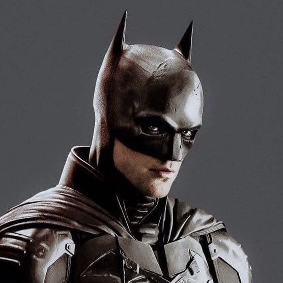
ㅤBatman / Bruce Wayne
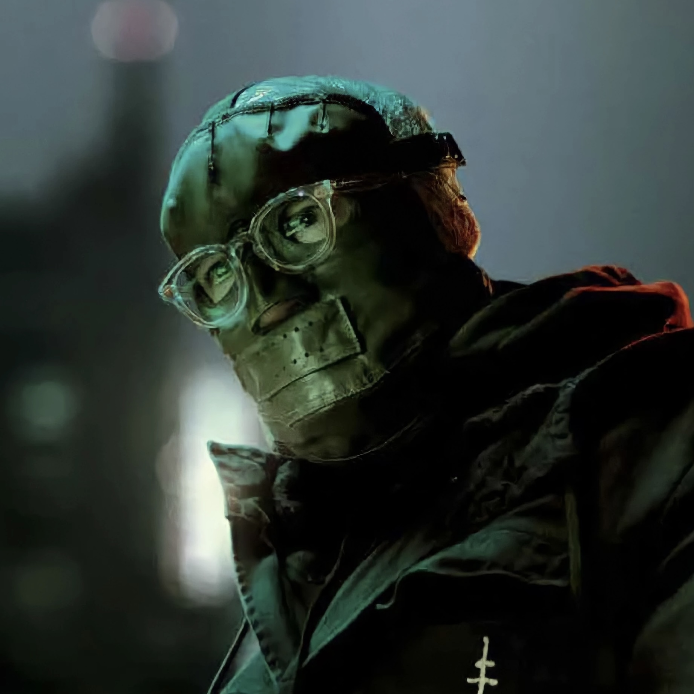
ㅤCharada
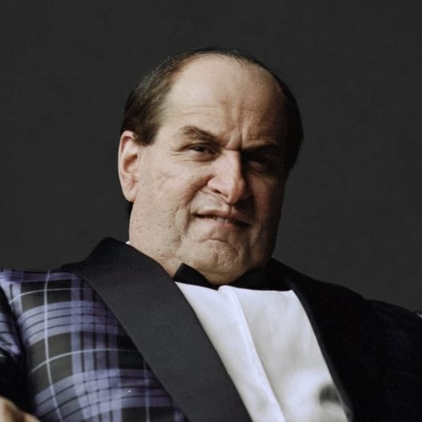
ㅤPinguim
The End off Evangelion
The End of Evangelion de 1997 é um filme de anime que apresenta um final alternativo para a série Neon Genesis Evangelion. O filme é dividido em dois episódios, cada um com um título japonês e inglês separado: Episódio 25': "Air"/ "Love is Destructive" e Episódio 26': "Yours Sincerely" / "ONE MORE FINAL: I need you". O filme é uma versão cinematográfica do clímax apocalíptico da história da série, com um relato mais "realista" do que os dois últimos episódios finais da série original.
Personagens Favoritos
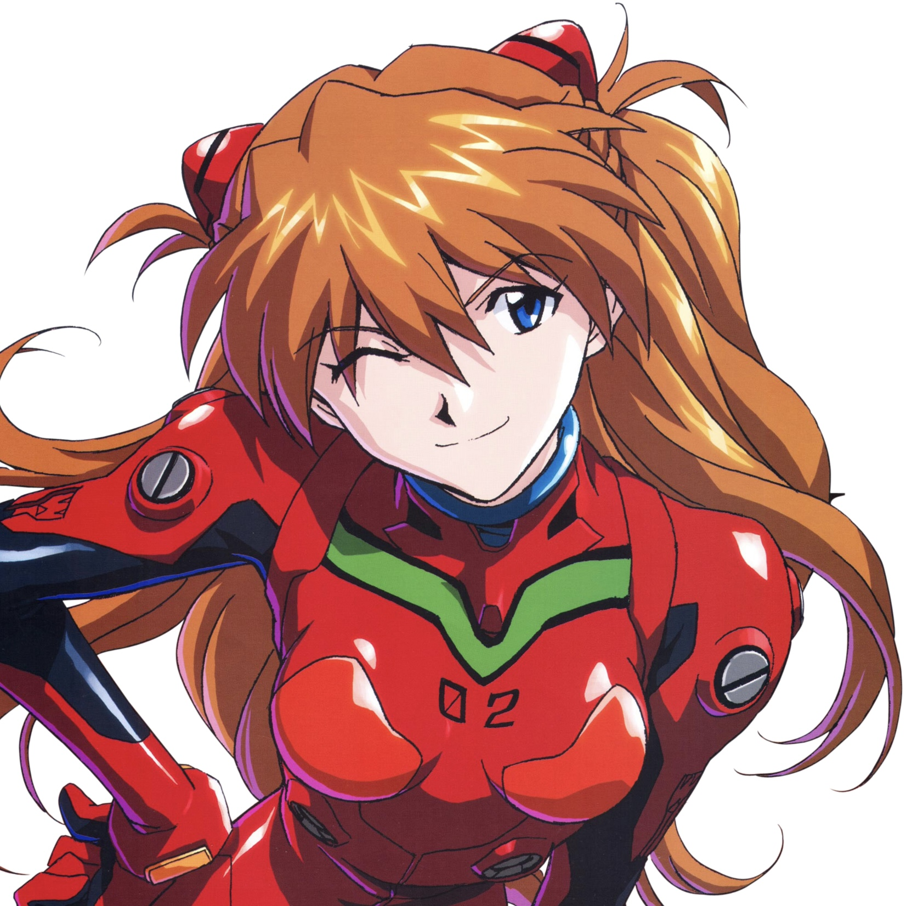
ㅤAsuka Langley Soryu
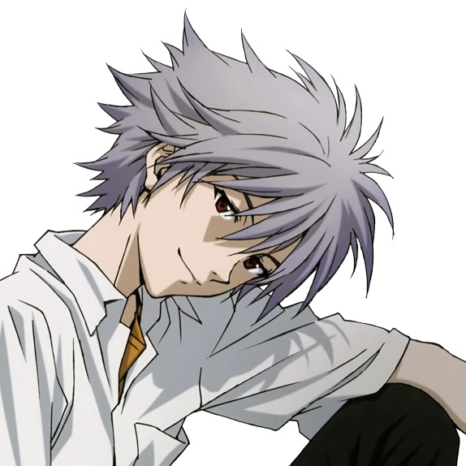
ㅤKaworu Nagisa
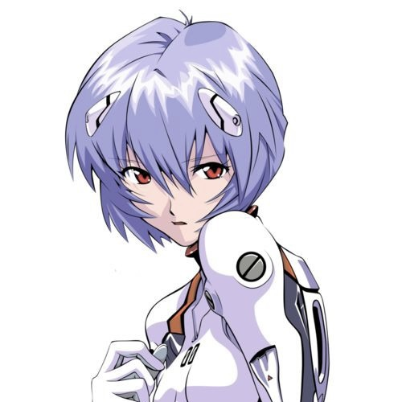
ㅤRei Ayanami
Kill Bill - Volume 1 & 2
Na obra Kill Bill (2003-2004) que gira em torno de Beatrix Kiddo, também conhecida como Black Mamba. Ela é uma assassina profissional que, no dia de seu casamento, é atacada por seu ex-namorado Bill e seu antigo bando, Durante o ataque, seu noivo é assassinado e ela entra em coma. Após quatro anos, Beatrix acorda e descobre que perdeu seu filho devido ao ataque. Consumida pelo desejo de vingança, ela decide eliminar todos os membros do seu antigo bando. A trama é marcada por intensas cenas de ação e uma narrativa que explora temas de traição, vingança e redenção.
Personagens Favoritos

ㅤBeatrix Kiddo

ㅤO-Ren Ishii

ㅤElle Driver
Esquadrão Suicida 2
O filme de 2021 apresenta um grupo de supervilões recrutados pelo governo para uma missão em uma ilha remota da América do Sul. O objetivo é chegar a um projeto ultrassecreto que ameaça a segurança do mundo. A missão é desafiadora, com o grupo enfrentando inimigos e forças de guerrilha. O filme é uma sequência do Esquadrão Suicida de 2016, mas o diretor afirma que é uma obra independente, não sendo uma sequência ou reboot.
Personagens Favoritos
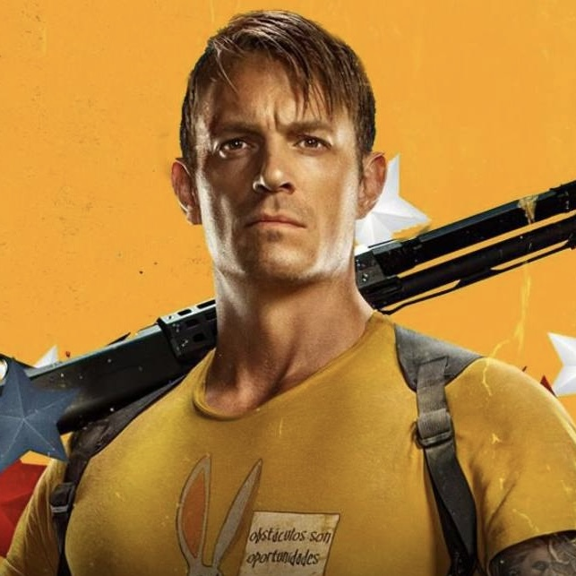
ㅤColonel Rick Flag
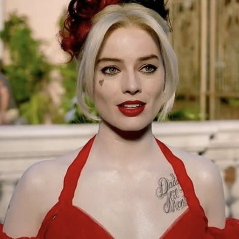
ㅤArlequina
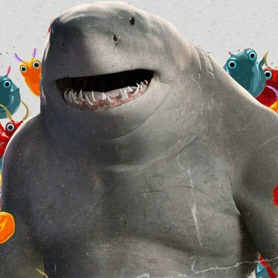
ㅤTubarão Rei
O Mapa das Pequenas Coisas Perfeitas
No filme de 2021, Mark é um adolescente que vive feliz em um dia que se repete incessantemente. Sua vida muda quando ele conhece Margaret, uma jovem que também está presa nesse ciclo temporal. Enquanto Mark deseja escapar desse dia interminável, Margaret quer aproveitar ao máximo as oportunidades que ele oferece. Juntos, eles começam a explorar as pequenas coisas que tornam a vida especial, aprendendo a valorizar os momentos simples e preciosos que muitas vezes passam despercebidos.
Personagens Favoritos
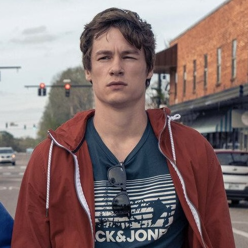
ㅤMark
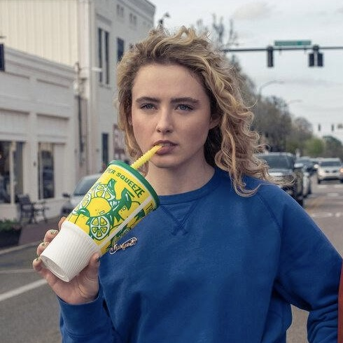
ㅤMargaret
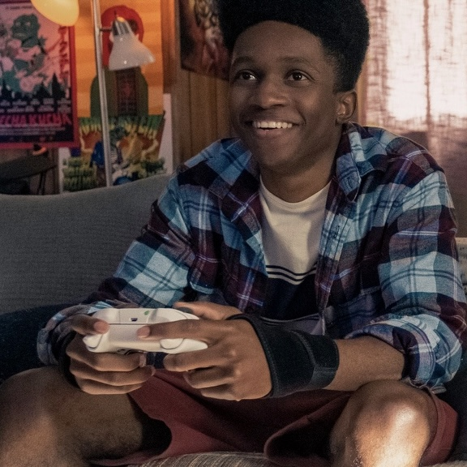
ㅤHenry
Yellowjackets
Yellowjackets (2021-2025) é uma série que narra a jornada de um time de futebol que, durante o ensino médio, sobreviveu a um acidente de avião no deserto de Ontário. 25 anos depois, acompanhamos uma equipe complicada e talentosa se transformando em um clã selvagem enquanto tentam reconstruir suas vidas como adultos. A série mistura terror psicológico e drama, explorando temas como trauma e amadurecimento
Personagens Favoritos
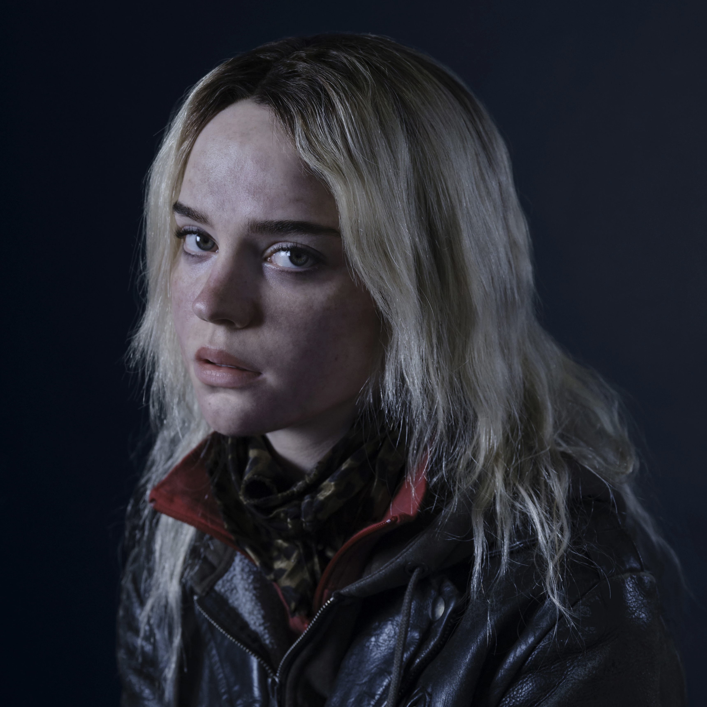
ㅤNatalie Scatorccio
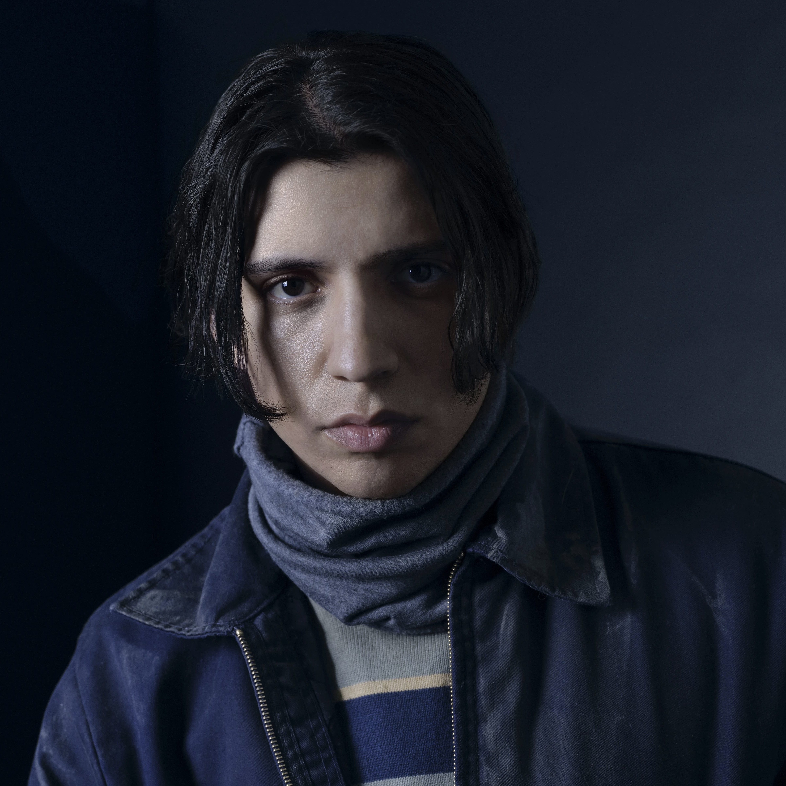
ㅤTravis Martinez
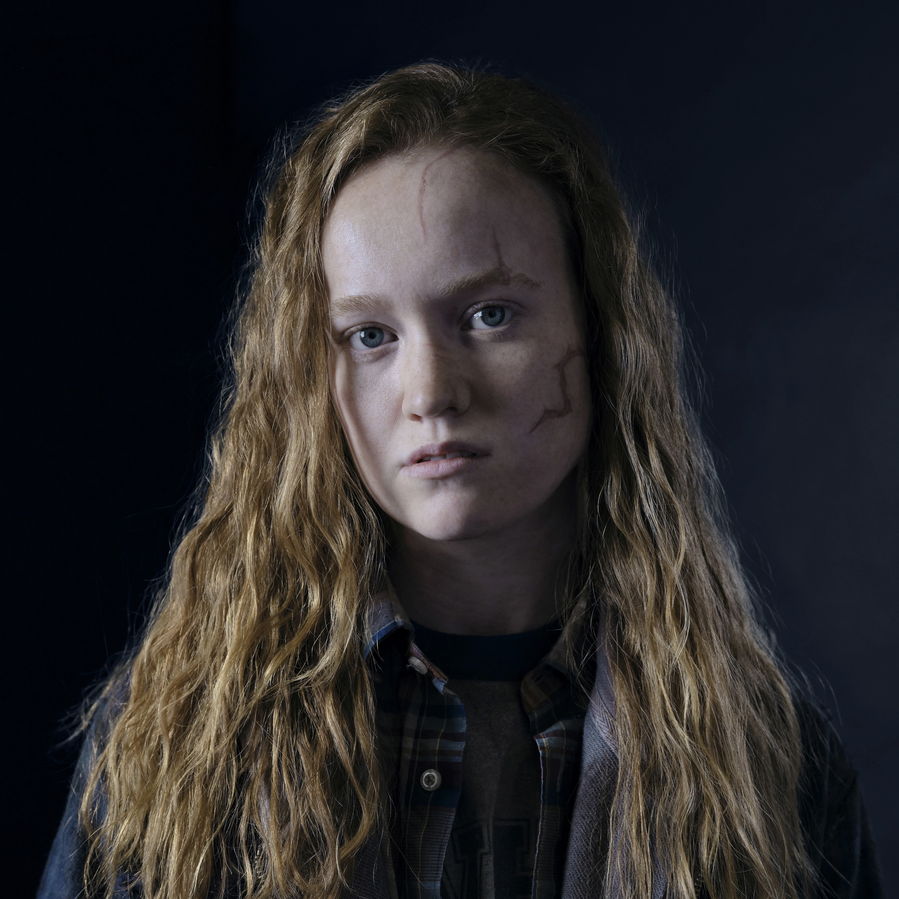
ㅤVan Palmer
Arcane
A trama de Arcane (2021-2024) se passa nas cidades-gêmeas de Piltover, uma metrópole próspera e tecnológica, e Zaun, um submundo decadente e oprimido. A história acompanha as irmãs Vi e Jinx, que após perderem os pais em um conflito, são adotadas por Vander, líder de Zaun, e acabam em lados opostos de uma guerra crescente entre as duas cidades. O conflito central envolve a tecnologia Hextec, capaz de controlar energia mística, que provoca desequilíbrios sociais e políticos, intensificando tensões entre Piltover e Zaun. Enquanto Vi busca proteger a ordem e a justiça, Jinx se torna líder do submundo, sendo perseguida por Caitlyn, defensora de Piltover, e enfrentando dilemas pessoais e ideológicos que moldam seu destino.
Personagens Favoritos
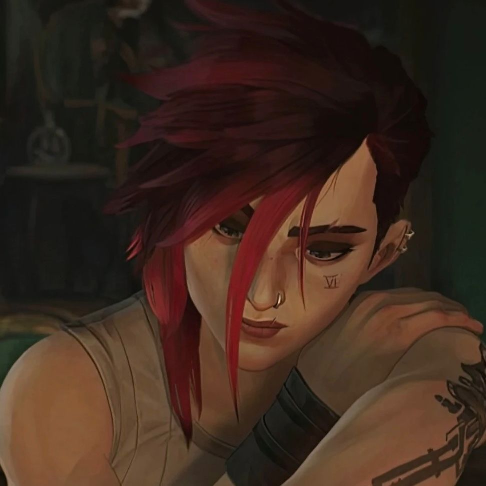
ㅤVi
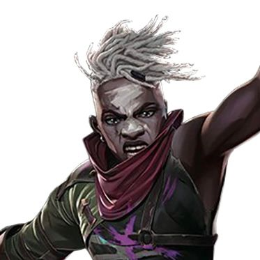
ㅤEkko
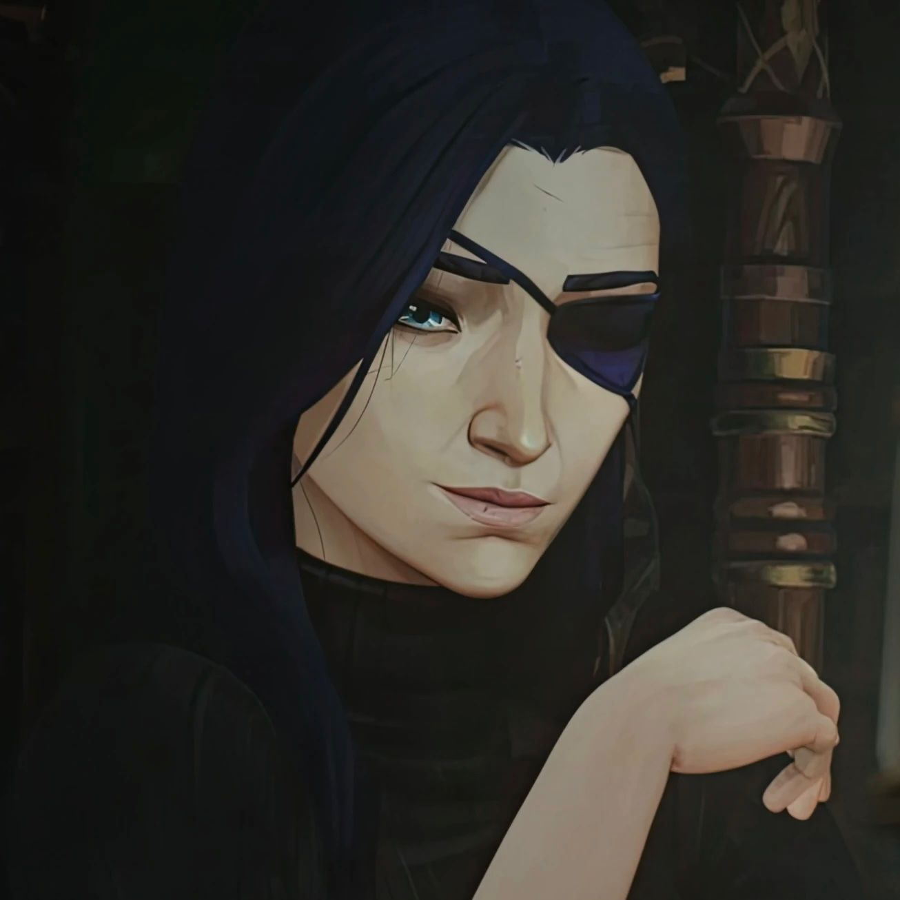
ㅤCaitlyn
aespa (에스파) - SM Culture Universe
A série apresenta aespa com seus avatares 'ae', mostrando uma história envolvente através dos seus três episódios lançados anualmente de 2021 até 2023.A serie é indicada para aqueles que desejam entender melhor a história do grupo sul-coreano.
Personagens Favoritos
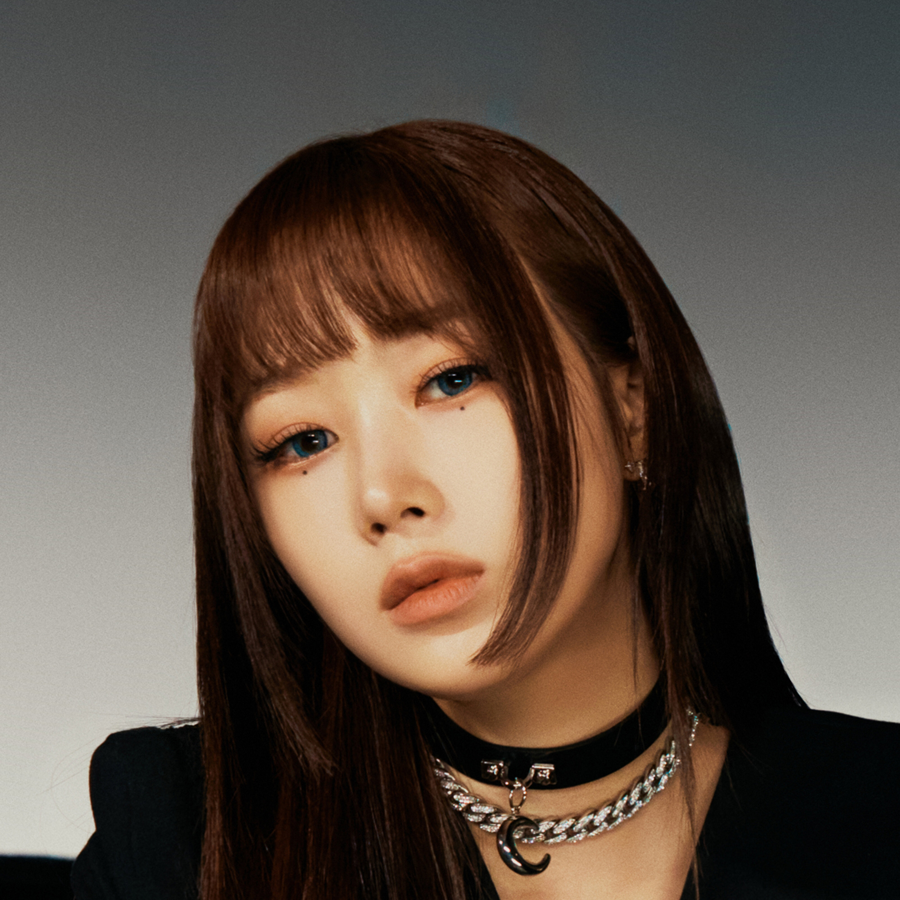
ㅤGiselle
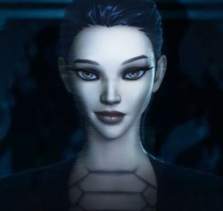
ㅤBlack Mamba
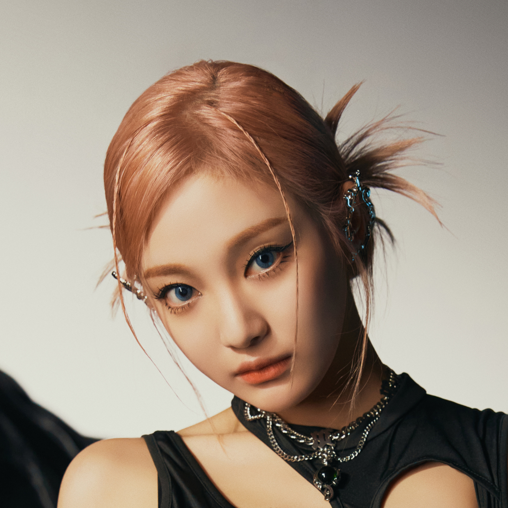
ㅤNingning